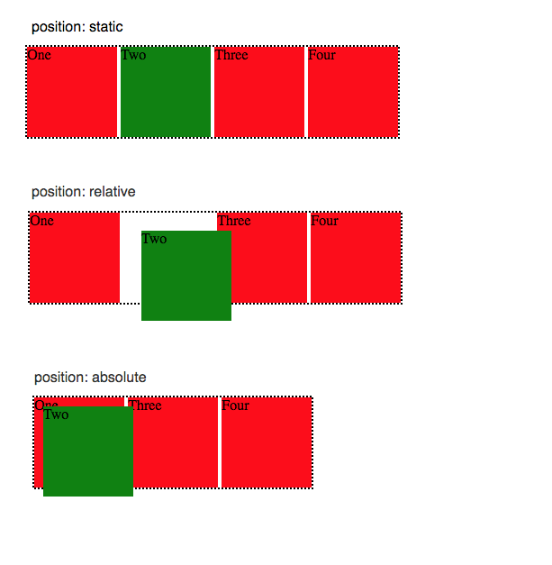
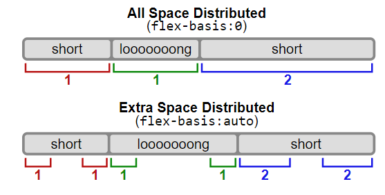
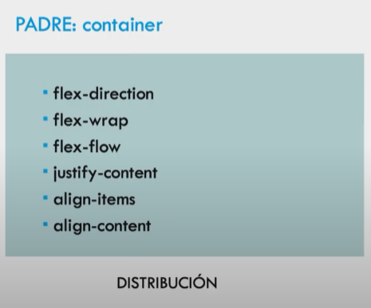
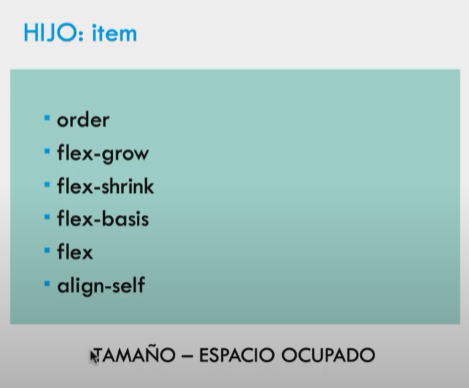
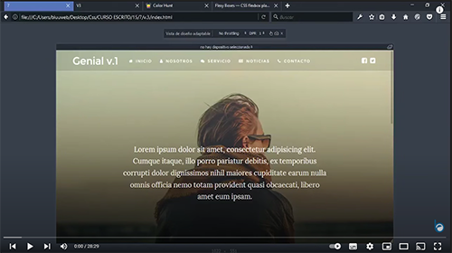

Responsive Design - units
Use em, rem and % to reach a responsive design.
Not to use px in our designs leads to better UX and accesibipty.
Abandon px units for font-size.
1 rem = 16px(default value)
Font-size > rem
Element size > em
Formula pixels to em/rem = px/16
Use % to define flexible widths. Ex: images.
Example -
https://codepen.io/abalozz/pen/rpoDI/
https://abalozz.es/sobre-como-usar-px-em-rem-y-percent-en-responsive-design/
Valores y Unidades CSS
< valores> son los tipos de datos que admiten las propiedades
longitudes absolutas ej: cm, mm, px
longitudes relativas ej: em, rem, vh, vw (funcionan en relacion a
otras medidas)
em = tamaño de letra del elemento padre
rem = tamaño de letra del elemento raíz
Valor hexadecimal = # seguido de 6 cifras hexadecimales
(0,1,2,3,4,5,6,7,8,9,a,b,c,d,e,f)
Cada par de valor hexadecimal representa un canal RGB.
el width de un elemento depende del width de su elemento padre
se puede agregar contenido desde CSS
funcion calc() para calculos de aritmetica
https://developer.mozilla.org/es/docs/Learn/CSS/Building_blocks/Values_and_units
https://developer.mozilla.org/en-US/docs/Web/CSS/CSS_Values_and_Units
Position - CSS
HTML elements are position static by default and not affected by
left, right, bottom, top properties.
position: static; positioned according to the normal flow of the
page.
position: relative; is positioned relative to its normal position.
Other content will not be adjusted to fit into any gap left by the
element.
position: fixed; is positioned relative to the viewport, which means
it always stays in the same place even if the page is scrolled.
position: absolute; is positioned relative to the nearest positioned
ancestor (instead of positioned relative to the viewport, like
fixed). However; if an absolute positioned element has no positioned
ancestors, it uses the document body, and moves along with page
scrolling.
position: sticky; is positioned based on the user's scroll position.
It is positioned relative until a given offset position is met in
the viewport - then it "sticks" in place
https://www.w3schools.com/css/css_positioning.asp
Position - static, relative, absolute

By default, position an element based on its current position in the flow. The top, right, bottom,
left and z-index properties do not apply. — source MDN
position: relative
Position an element based on its current position without changing layout.
position: absolute
Position an element based on its closest positioned ancestor position.
https://www.w3schools.com/css/css_positioning.asp
FlexBox - Basics
centering elements responsibly inside a container > display:flex;
justify-content:center; align-items:center;
to make a container's height 100%, set the html and body height to
100%
use justify-self or align-self to move the target element
by default, flex will make the element block
by default, flex-wrap is no-wrap. Change it to "wrap" so child
elements will wrap inside.
"flex" property, is the short hand writting of flex-grow,
flex-shrink, flex-basis.
Combine wrap with @media querys for responsive design.
.container { display: flex; flex-wrap: wrap; } .container > div >
img { width: 100%; height: 100%; object-fit: cover; } .container >
.normal { flex: 1 1 150px; }
https://scrimba.com/learn/flexbox/your-first-flexbox-layout-flexbox-tutorial-canLGCw
FlexBox - Background
The Flexbox Layout (Flexible Box) module (a W3C Candidate
Recommendation as of October 2017) aims at providing a more
efficient way to lay out, align and distribute space among items in
a container, even when their size is unknown and/or dynamic (thus
the word “flex”). The main idea behind the flex layout is to give
the container the ability to alter its items’ width/height (and
order) to best fill the available space (mostly to accommodate to
all kind of display devices and screen sizes). A flex container
expands items to fill available free space or shrinks them to
prevent overflow. Most importantly, the flexbox layout is
direction-agnostic as opposed to the regular layouts (block which is
vertically-based and inline which is horizontally-based). While
those work well for pages, they lack flexibility (no pun intended)
to support large or complex applications (especially when it comes
to orientation changing, resizing, stretching, shrinking, etc.).
Note: Flexbox layout is most appropriate to the components of an
application, and small-scale layouts, while the Grid layout is
intended for larger scale layouts.
https://css-tricks.com/snippets/css/a-guide-to-flexbox/
FlexBox - Basic & Terminology

The main axis may change direction (horizontal || vertical )
depending on the property flex-direction.
Flexbox is (aside from optional wrapping) a single-direction layout
concept.
Flex-wrap
By default, flex items will all try to fit onto one line.
Flex-flow
Shorthand for flex-directo and flex-wrap
.container { flex-flow: column wrap; }
https://css-tricks.com/snippets/css/a-guide-to-flexbox/
FlexBox - Justify-content (container)
Main axis

This defines the alignment along the main axis.
It also exerts some control over the alignment of items when they overflow the line.
https://css-tricks.com/snippets/css/a-guide-to-flexbox/
FlexBox - Align-content (container)
Cross axis

This aligns a flex container’s lines within when there is extra space in the cross-axis.
https://css-tricks.com/snippets/css/a-guide-to-flexbox/
FlexBox - Align-items (container)

This defines the default behavior for how flex items are laid out along the cross axis on the current
line. Think of it as the justify-content version for the cross-axis (perpendicular to the
main-axis).
https://css-tricks.com/snippets/css/a-guide-to-flexbox/
FlexBox - Gap (container)

This defines the default behavior for how flex items are laid out along the cross axis on the current
line. Think of it as the justify-content version for the cross-axis (perpendicular to the
main-axis).
.container {
display: flex;
gap: 10px;
gap: 10px 20px; /* row-gap column gap */
row-gap: 10px;
column-gap: 20px;
}
https://css-tricks.com/snippets/css/a-guide-to-flexbox/
FlexBox - Order (flex-items)

By default, flex items are laid out in the source order. However, the order property controls the
order in which they appear in the flex container.
.item {
order: 5; /* default is 0 */
}
Items with the same order revert to source order.
https://css-tricks.com/snippets/css/a-guide-to-flexbox/
FlexBox - Grow (flex-items)

This defines the ability for a flex item to grow if necessary. It accepts a unitless value that
serves as a proportion. It dictates what amount of the available space inside the flex container the
item should take up.
If all items have flex-grow set to 1, the remaining space in the container will be distributed
equally to all children. If one of the children has a value of 2, the remaining space would take up
twice as much space as the others (or it will try to, at least).
.item {
flex-grow: 4; /* default 0 */
}
Negative numbers are invalid.
https://css-tricks.com/snippets/css/a-guide-to-flexbox/
FlexBox - flex-shrink / flex-basis
Flex-shrink
This defines the ability for a flex item to shrink if necessary.
.item {
flex-shrink: 3; /* default 1 */
}
Negative numbers are invalid.
This defines the default size of an element before the remaining space is distributed. It can be a
length (e.g. 20%, 5rem, etc.) or a keyword. The auto keyword means “look at my width or height
property” (which was temporarily done by the main-size keyword until deprecated). The content
keyword means “size it based on the item’s content” – this keyword isn’t well supported yet, so it’s
hard to test and harder to know what its brethren max-content, min-content, and fit-content do.
.item {
flex-basis: | auto; /* default auto */
}
If set to 0, the extra space around content isn’t factored in. If set to auto, the extra space is
distributed based on its flex-grow value.

https://css-tricks.com/snippets/css/a-guide-to-flexbox/
FlexBox - flex
This is the shorthand for flex-grow, flex-shrink and flex-basis combined. The second and third
parameters (flex-shrink and flex-basis) are optional. The default is 0 1 auto, but if you set it
with a single number value, it’s like 1 0.
.item {
flex: none | [ <'flex-grow'> <'flex-shrink'>? || <'flex-basis'> ]
}
It is recommended that you use this shorthand property rather than set the individual properties.
The shorthand sets the other values intelligently.
https://css-tricks.com/snippets/css/a-guide-to-flexbox/
FlexBox - align-self

This allows the default alignment (or the one specified by align-items) to be overridden for
individual flex items.
Please see the align-items explanation to understand the available values.
.item {
align-self: auto | flex-start | flex-end | center | baseline | stretch;
}
Note that float, clear and vertical-align have no effect on a flex item.
https://css-tricks.com/snippets/css/a-guide-to-flexbox/
FlexBox - Prefixing FlexBox
Flexbox requires some vendor prefixing to support the most browsers possible. It doesn’t just include
prepending properties with the vendor prefix, but there are actually entirely different property and
value names. This is because the Flexbox spec has changed over time, creating an “old”, “tweener”,
and “new” versions.
Perhaps the best way to handle this is to write in the new (and final) syntax and run your CSS
through Autoprefixer, which handles the fallbacks very well.
Alternatively, here’s a Sass @mixin to help with some of the prefixing, which also gives you an idea
of what kind of things need to be done:
@mixin flexbox() {
display: -webkit-box;
display: -moz-box;
display: -ms-flexbox;
display: -webkit-flex;
display: flex;
}
@mixin flex($values) {
-webkit-box-flex: $values;
-moz-box-flex: $values;
-webkit-flex: $values;
-ms-flex: $values;
flex: $values;
}
@mixin order($val) {
-webkit-box-ordinal-group: $val;
-moz-box-ordinal-group: $val;
-ms-flex-order: $val;
-webkit-order: $val;
order: $val;
}
.wrapper {
@include flexbox();
}
.item {
@include flex(1 200px);
@include order(2);
}
https://css-tricks.com/snippets/css/a-guide-to-flexbox/
FlexBox - Tricks
Adaptive Photo Layout with Flexbox
Using Flexbox and text ellipsis
together
Designing A Product Page Layout with
Flexbox
Flexbox and absolute positioning
Balancing on a Pivot with Flexbox
Useful Flexbox Technique: Alignment Shifting
Wrapping
Flexbox and Truncated Text
Filling the Space in the Last Row with
Flexbox
FlexBox - Container & items


https://www.youtube.com/watch?v=5jUFUjYT1VY&list=PLNGy7jWL6QFmTmS8azq1HRa1FIXFwRI95&index=2&ab_channel=D-Formaci%C3%B3nCr%C3%B3nica
FlexBox - Maquetado de sitio y config responsiva

https://www.youtube.com/watch?v=6xfhD0t5IdU&list=PLNGy7jWL6QFmTmS8azq1HRa1FIXFwRI95&index=13&ab_channel=Bluuweb
CSS reset & debugg
CSS reset
Avoid browsers to set their own properties.
:root { font: 20px/1.2 "Roboto", sans-serif; } /* or html */
body,
body * {
margin: unset;
box-sizing: unset;
padding: unset;
font-size: unset;
color: unset;
text-decoration: unset;
}
CSS debugg
Settings that help see clearly size of boxes.
body * {
color: hsla(210, 100%, 100%, 0.88) !important;
background: hsla(210, 100%, 50%, 0.33) !important;
outline: 0.25rem solid hsla(210, 100%, 100%, 0.50) !important;
}
Comment out the link:css to avoid applying it.
https://scrimba.com/learn/buildablog/css-grid-pt-1-cGZKNCv
Grid - CSS
The CSS Grid Layout Module offers a grid-based layout system, with rows and columns.
A grid layout consists of a parent element, with one or more child elements.
An HTML element becomes a grid container when its display property is set to grid or inline-grid.
All direct children of the grid container automatically become grid items.
The spaces between each column/row are called gaps.
display: grid;
grid-column-gap: 50px;
grid-row-gap: 50px;
grid-gap: 50px 100px;
The grid-gap property is a shorthand property

Place a grid item at column line 1, and let it end on column line 3:
.item1 {
grid-column-start: 1;
grid-column-end: 3;
}
https://www.w3schools.com/css/css_grid.asp
Grid Properties - CSS
Property Description
column-gap Specifies the gap between the columns
gap A shorthand property for the row-gap and the column-gap properties
grid A shorthand property for the grid-template-rows, grid-template-columns,
grid-template-areas, grid-auto-rows, grid-auto-columns, and the grid-auto-flow properties
grid-area Either specifies a name for the grid item, or this property is a shorthand
property for the grid-row-start, grid-column-start, grid-row-end, and grid-column-end properties
grid-auto-columns Specifies a default column size
grid-auto-flow Specifies how auto-placed items are inserted in the grid
grid-auto-rows Specifies a default row size
grid-column A shorthand property for the grid-column-start and the grid-column-end
properties
grid-column-end Specifies where to end the grid item
grid-column-gap Specifies the size of the gap between columns
https://www.w3schools.com/css/css_grid.asp
Grid Properties II - CSS
Property Description
grid-column-start Specifies where to start the grid item
grid-gap A shorthand property for the grid-row-gap and grid-column-gap properties
grid-row A shorthand property for the grid-row-start and the grid-row-end properties
grid-row-end Specifies where to end the grid item
grid-row-gap Specifies the size of the gap between rows
grid-row-start Specifies where to start the grid item
grid-template A shorthand property for the grid-template-rows, grid-template-columns and
grid-areas properties
grid-template-areas Specifies how to display columns and rows, using named grid items
grid-template-columns Specifies the size of the columns, and how many columns in a grid
layout
grid-template-rows Specifies the size of the rows in a grid layout
row-gap Specifies the gap between the grid rows
https://www.w3schools.com/css/css_grid.asp
Transition property - CSS
Allows you to change property values smoothly, over a given duration.
transition
transition-delay
transition-duration
transition-property
transition-timing-function
div {
width: 100px;
height: 100px;
background: red;
transition: width 2s, height 4s;}
div:hover {
width: 300px;
height: 300px;}
transition-timing-function:
linear ease ease-in ease-out
ease-in-out
transition + transform
div {
width: 100px;
height: 100px;
background: red;
transition: width 2s, height 2s, transform 2s;
}
div:hover {
width: 300px;
height: 300px;
transform: rotate(180deg);
} Short hand
div {
transition: width 2s linear 1s;
}
https://www.w3schools.com/css/css3_transitions.asp
Animations - CSS
CSS allows animation of HTML elements without using JavaScript or Flash!
To use CSS animation, you must first specify some keyframes for the animation.
To get an animation to work, you must bind the animation to an element.
If the animation-duration property is not specified, no animation will occur.
Properties:
>@keyframes
animation-name
animation-duration
animation-delay
animation-iteration-count
animation-direction
animation-timing-function
animation-fill-mode
animation-play-state
animation
@keyframes example {
from {background-color: red;}
to {background-color: yellow;}
}
@keyframes example {
0% {background-color: red;}
25% {background-color: yellow;}
50% {background-color: blue;}
100% {background-color: green;}
}
div {
width: 100px;
height: 100px;
background-color: red;
animation-name: example;
animation-duration: 4s;
}
keywords "from" and "to" represents 0% and 100%.
By using percent, you can add as many style changes as you like.
Use negative values on "animation-delay" to decide at what point the animation will start.
The animation-iteration-count: number of times animations runs. "infinite" is allowed.
animation-direction: normal reverse alternate alternate-reverse.
The animation-fill-mode property specifies a style for the target element when the animation is not playing (before it starts, after it ends, or both).
animation-fill-mode: none forwards backwards both.
shorthand {animation: animation-name animation-duration animation-timing-function animation-delay animation-iteration-count animation-direction}
animation-play-state: paused|running|initial|inherit;
animation-timing-function: linear, ease, ease-in, ease-out, ease-in-out
https://www.w3schools.com/css/css3_animations.asp